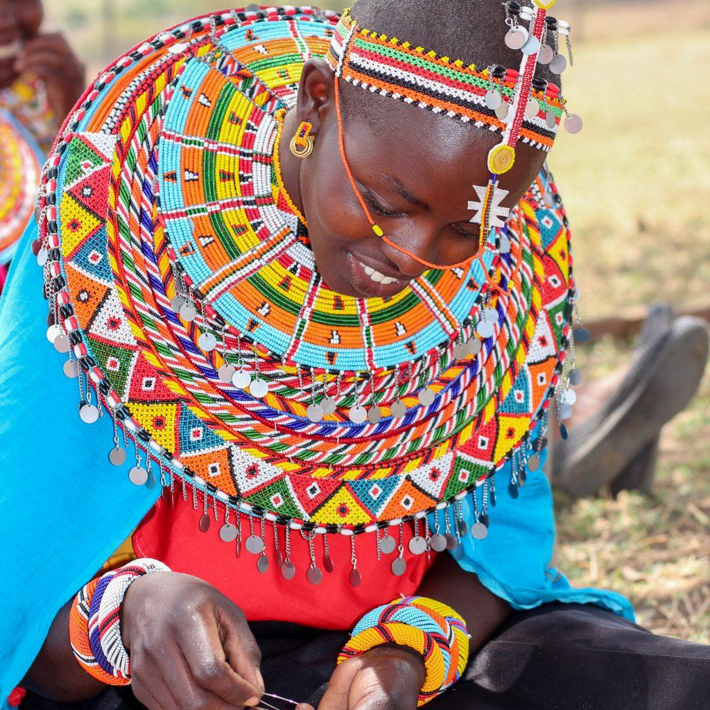

Question 1 of 20
Score: 0
Bantu – Kikuyu

20 questions across all four ethnic communities — Bantu, Nilotes, Cushites, and Semites. Test what you've learned and discover how much you know about Kenya's rich cultural heritage.